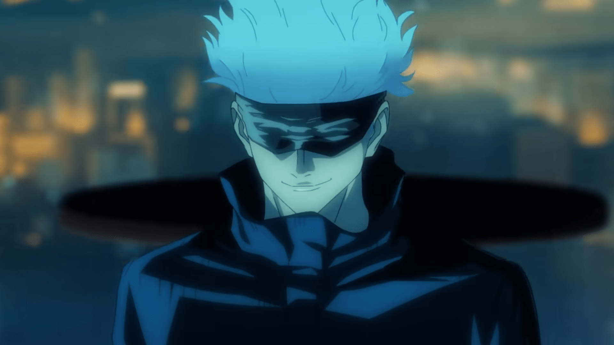
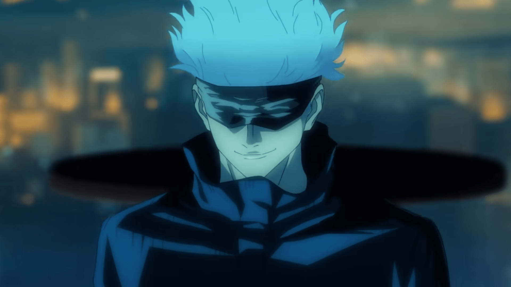
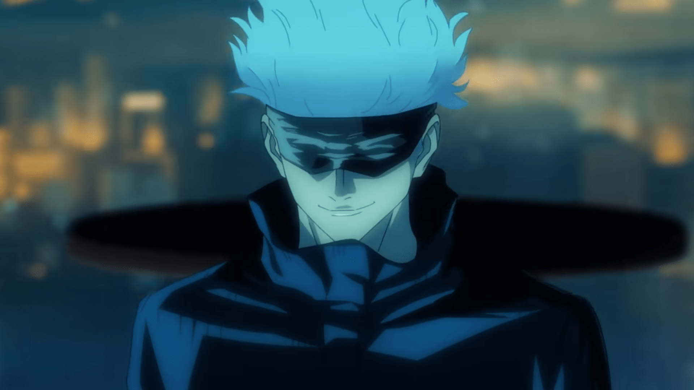
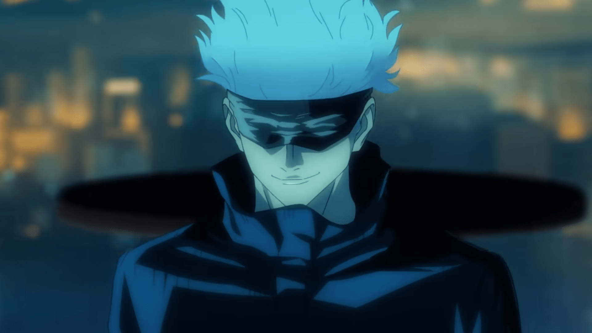

It is an Anime movie which is currently in the top grossing list worldwide. Yuta Okkotsu is a nervous high school student who is suffering from a serious problem—his childhood friend Rika has turned into a Curse and won't leave him alone. When they were children, Rika Orimoto was killed in a traffic accident right before the eyes of her close friend, Yuta Okkotsu. "It's a promise. When we both grow up, we'll get married." Rika became an apparition, and Yuta longed for his own death after suffering under her curse, but the greatest Jujutsu sorcerer, Satoru Gojo, welcomed him into Jujutsu High. There Yuta meets his classmates, Maki Zen'in, Toge Inumaki, and Panda, and finally finds his own determination. "I want the confidence to say it's okay that I'm alive!" "While I'm at Jujutsu High, I'll break Rika-chan's curse." Meanwhile, the vile curse user, Suguru Geto, who was expelled from the school for massacring ordinary people, appears before Yuta and the others. "This coming December 24th, we shall carry out the Night Parade of a Hundred Demons." While Geto advocates for creating a paradise for only jujutsu sorcerers, he unleashes a thousand curses upon Shinjuku and Kyoto to exterminate all non-sorcerers. Will Yuta be able to stop Geto in the end? And what will happen to breaking Rika's curse...?